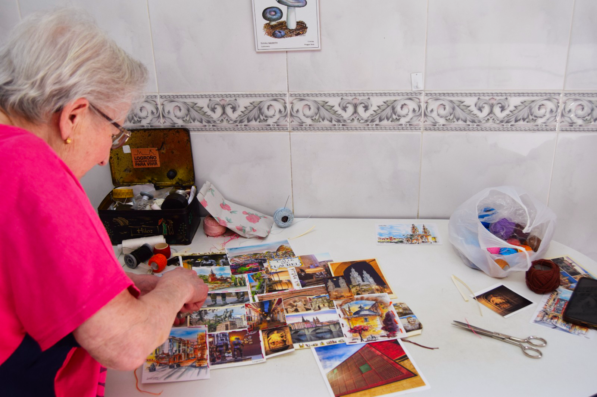
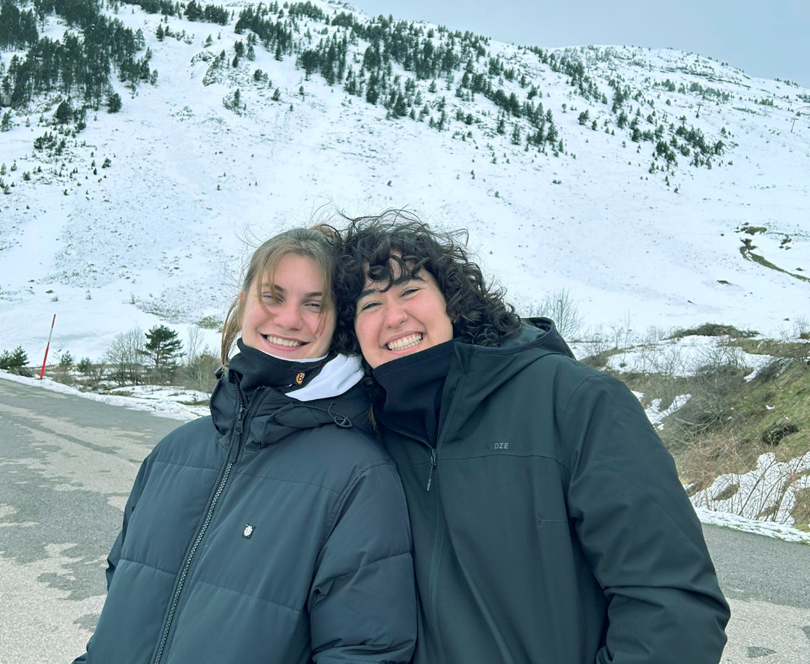

Almazuela es una revista, un proyecto de comunicación cultural y una herramienta para conectarnos con nuestra tierra. Es la materialización de un TFM y, sobre todo, es la integración de las diferentes realidades de La Rioja, es la difusión de un patrimonio y la apuesta por la cultura en una región de población reducida y diversa.

Más allá de un conjunto de entrevistas y reportajes, Almazuela es la fusión de aquello que Carmen, Jesús e Iñaki cantaban en 1977: “La Rioja existe pero no es, si nos unimos la hemos de hacer”; junto con los versos del himno de Logroño que cada año miles de personas interpretan en la plaza del Ayuntamiento: “Logroño es joven y antiguo, es pasado y es progreso”. Es la unión de los valores, las tradiciones, la modernidad y las nuevas creaciones riojanas.
El objetivo de este proyecto no consiste en promocionar La Rioja en el exterior, aunque se prefiera un turismo que vaya más allá del vino y la fiesta barata; sino en que su población conozca mejor lo que sucede en la región y se pueda sentir parte de ello. Desde luego que no hay nada de malo en bajar a Madrid para asistir a un concierto o en desplazarse a Barcelona para ver un festival de cortometrajes; al contrario, la cultura y el arte siempre son enriquecedores. Pero desde Almazuela se busca dar acceso cultural a quienes no quieren o no pueden desplazarse de la provincia, que la población riojana sepa lo que ocurre en el pueblo de al lado, qué libro ha escrito su vecina o qué artistas vienen a la sierra el próximo fin de semana.
Por todo ello, los artículos de Almazuela, aunque variados en cuanto a contenido y forma, siempre estarán relacionados con La Rioja y su industria cultural, tejido asociativo, tradiciones o formas de vida. Además, esta es una revista antirracista y feminista; de todas y para todas las personas que viven en la comunidad, sea cual sea su origen; y, por qué no, también para quienes la visitan.
“Nadie en Logroño se siente extranjero”, dice su himno. Tampoco en Almazuela.

Patri y Nuria, directoras y autoras del proyecto

Samuel, desarrollador web

Abuela Matilde, costurera y modelo de Almazuela

Carmen, diseñadora gráfica